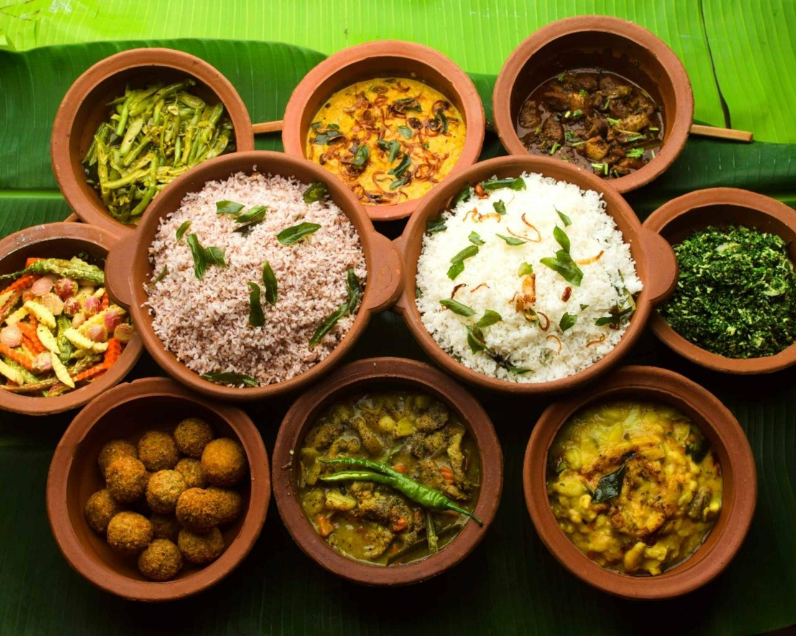

Sri Lanka, which is also known as the pearl in the Indian Ocien, is an island country in South Asia. If you are interested in planning your holiday in a beautiful tropical island, Sri Lanka is obviously your best choice. You can explore many natural beauties,that will blow your mind, and also you can meet locals, who are very friendly, and try some local foods.Also, you can explore many historical locations, which are mostly influenced by buddhist culture.Also, you can see the variety of languages.Here are some quick facts about Sri Lanka. *Total land area-65 610sqKm *Total population~2.1M *Religion-70% Buddhists, 12% Tamils, 10% Muslims, 8% others *Languages- Sinhala, English and Tamil are widely used.
Sri Lanka is one of the leading destinations in the whole world. The land of serendipity brings spiritual tranquility and a chance to rediscover oneself. The beauty of this tiny island is simply breath-taking. Known for its enchanting ancient ruins, endless soft-sanded beaches, imposing mountains, colourful festivals, tempting water sports, dense wild-life, diverse ethnical groups and off the top hospitality from the local residents, Sri Lanka is bound to make you come back again. Sri Lanka Travel and Tourism brings all of this for you right under your fingertips so that you can discover the serene island for yourself. - Sri lanka Travel and Tourism 2022- Best time to visit Sri Lanka
Food culture
Sri Lanka has an amazing food culture, that is based on different cultures and different locations in the coountry.Most of foods in coastline is based on fish, while in the land, there is a higher consumption of vegetables.Staple food of Sri Lanka is Rice, and in ancient times, it is said that Sri Lanka was nourished with paddy and rice, so that they could export some of them. Also, Sri Lanka is famous for the unique and top class spices that you can find nowhere in the world. Sri Lankan cinnamon is one of the most famous among them.Cinnamon is a main export spice that is grown widely in central province in Sri Lanka. Ceylon tea, is a well reputed trademark in the world, due to the unique taste of it.Most of tea cultivation is done in the central part of the country, which is very cold due to the higher altitude, but has the exact soil and other environmental facts that needed for tea cultivation.Tea plant was introduced to Sri Lanka by british in 1800s, and even today, most of people in European countries love to have a cup of ceylon tea, specially in their breakfast.

Languages
Due to the variety of ethnicity, there are main 3 languages widely spoken in Sri Lanka.Sinhalese, which is the mothertongueof most of Sri Lankan locals is very common.Also, English is spoken widely, so it is very convinient to co-operate with locals.Some people speak Tamil in certain areas.Most of locals are very supportive and undestandable, so communication will be much easier.